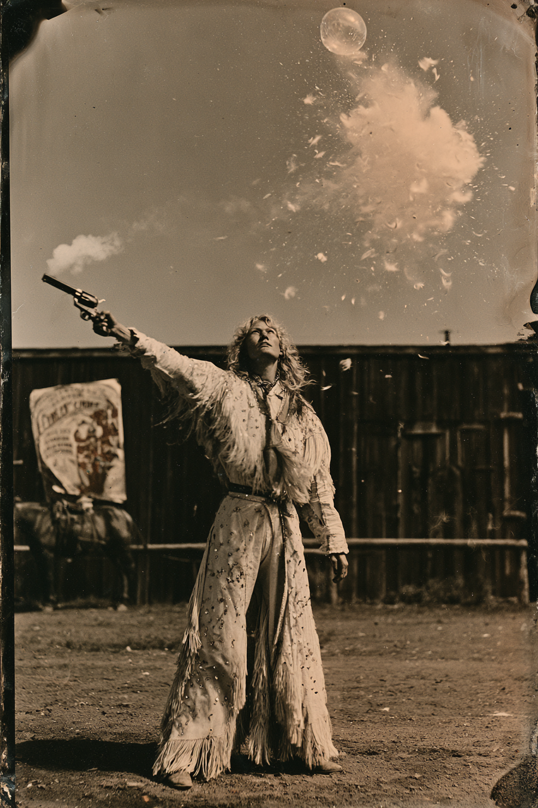

Archetyp: GUNSLINGER (Revolverheld)
Einsteigerfigur: ein Würfel, eine Frage — „worauf schieße ich?“
Viertausendachthundert Glaskugeln in sieben Jahren, und noch kein einziger Mensch. Sie kündigt jeden Schuss vorher an, weil man das eben tut.
| Agility | d8 | 2 |
| Smarts | d4 | 0 |
| Spirit | d6 | 1 |
| Strength | d6 | 1 |
| Vigor | d6 | 1 |
| Skill | Attr. | Die | Pts. |
|---|---|---|---|
| Shooting | Agi | d8 | 3 |
| Riding | Agi | d6 | 2 |
| Athletics | Agi | d6 | 1 |
| Performance | Spi | d6 | 2 |
| Notice | Sma | d6 | 2 |
| Persuasion | Spi | d6 | 1 |
| Fighting | Agi | d4 | 1 |
| Weapon | Range | Damage | AP | RoF | Wt. | Cost |
|---|---|---|---|---|---|---|
| Colt Peacemaker (.45), links | 12/24/48 | 2W6+1 | 1 | 1 | 4 | $15 |
| 6 Schuss | ||||||
| Colt Peacemaker (.45), rechts | 12/24/48 | 2W6+1 | 1 | 1 | 4 | $15 |
| 6 Schuss · das Gegenstück, gleiche Seriennummernreihe | ||||||
| Winchester '73 (.44-40) | 24/48/96 | 2W8–1 | 2 | 1 | 5 | $25 |
| 15 Schuss · Messingnägel im Schaft, ein Muster aus der Schau | ||||||
Quick: Aktionskarte 5 oder niedriger neu ziehen · Luck: ein zusätzlicher Benny je Sitzung
Steady Hands: kein Abzug von wackliger Unterlage, Laufen nur –1
Hintergrund. Geboren als Hedvig Kvist in Decorah, Iowa, dritte von sechs, Tochter eines norwegischen Küfers, der drei Sprachen fluchte und keine schrieb. Mit vierzehn ging sie mit Colonel Ramsbottoms Grand Congress of Rough Riders and Marksmen fort, weil die Truppe im Bezirk lagerte und eine Frau brauchte, die klein genug für das Plakat und ruhig genug für die Nummer war. Sieben Jahre lang zerschoss sie Glaskugeln, die ihr ein Mann namens Piggot in die Luft warf, immer dieselbe Ansage, immer dieselben elf Schritte: „Die Dame bittet um Ruhe — und um Ihre Aufmerksamkeit auf den Himmel über dem zweiten Mast.“ Im Mai ’84 löste sich die Schau in Ogallala auf, weil der Colonel mit der Kasse verschwand. Zurück blieben achtzehn Leute ohne Lohn, ein Pferd, das bei Applaus losgeht, und ein verschlossener Requisitenwagen, den niemand öffnen durfte.
Build. Geschicklichkeit W8, Verstand W4, Geist W6, Stärke W6, Konstitution W6 · Parade 4, Robustheit 5 Schießen W8, Reiten W6, Athletik W6, Auftreten W6, Bemerken W6, Überreden W6, Kämpfen W4 Talente: Quick (Schnell), Steady Hands (Ruhige Hände), Luck (Glück) Handicaps: Overconfident (Übermütig) — Major · Big Mouth (Große Klappe) — Minor · Quirk (Tick) — Minor: sie kündigt jeden Schuss an, bevor sie ihn abgibt, laut und in der Formulierung der Schau Kein Talent mit Bedingung, kein Ressourcenpool, keine Machtliste. Drei Talente, die immer gelten, und ein Würfel, den man kennt.
Aufhänger. Der Requisitenwagen stand die letzten zwei Jahre nie im Lager, sondern immer dreißig Schritt außerhalb, und Piggot schlief daneben. Als die Schau zerfiel, nahm Hazel die Peacemaker, das Plakat und den Schlüssel, den Piggot fallen ließ, als sie ihn fanden. Der Wagen ist inzwischen weiter, und der Schlüssel passt nicht auf ein Vorhängeschloss — er ist zu klein und zu fein, mehr Uhrmacher als Stallmeister.
Notizen. So sehen die sechs Zeilen des Bogens am Tisch aus.
Warum es Spaß macht. Du bist die Figur, die man einem Menschen in die Hand drückt, der noch nie Savage Worlds gespielt hat: Karte ziehen, W8 auf Schießen, fertig. Und der Charakter macht die Arbeit von allein — Übermütig und Große Klappe bringen dich in jede Szene hinein, und der Tick sorgt dafür, dass der ganze Tisch mitbekommt, was du gleich vorhast, ob du willst oder nicht.
Regelgrundlage: Regelnotizen · Archetyp-Notizen